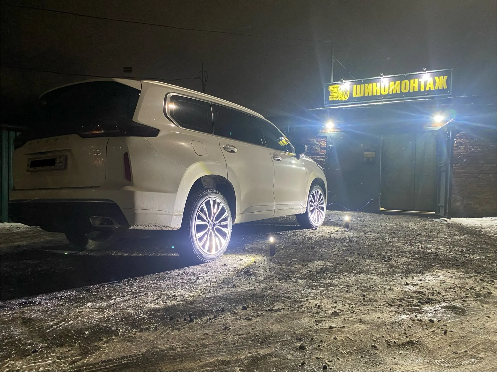
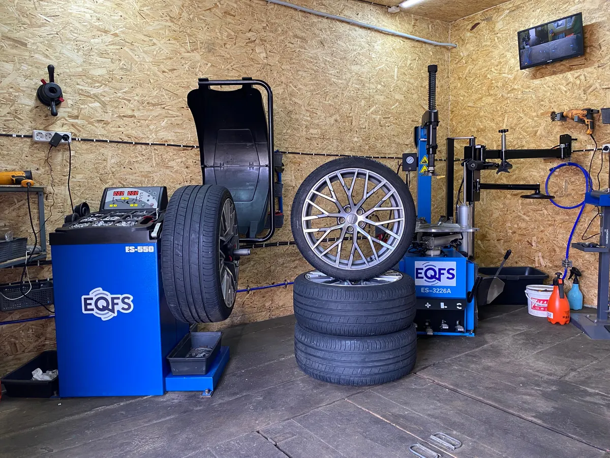
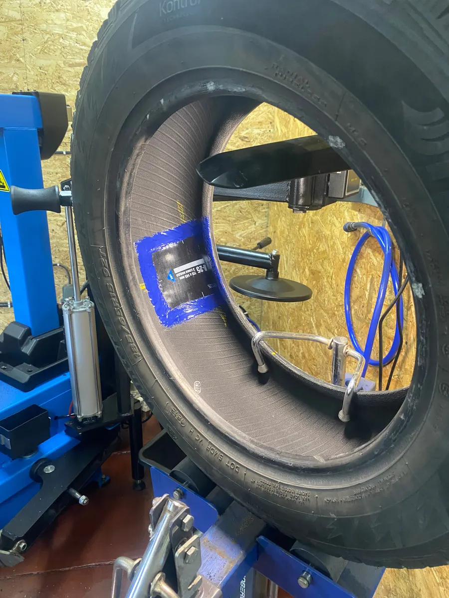
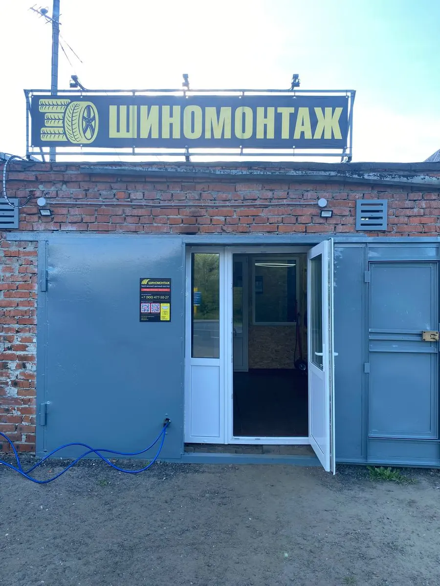

Шиномонтаж · Владимир, Рокадная дорога, 17Г
Шиномонтаж во Владимире – переобуем, пока вы пьёте кофе
Запись на ваше время, балансировка, ремонт проколов и дисков. Ждёте в тёплой зоне с чаем и кофе.
- Правка и ремонт дисков, сварка аргоном
- Тёплая зона ожидания, чай и кофе
- Затяжка динамометрическим ключом

Что делаем при переобувке
Входит
- Снимаем и ставим колёса
- Перебортировка
- Балансировка каждого колеса
- Затяжка динамометрическим ключом
- Снятые колёса – в пакетах в багажник
Отдельно, если нужно
- Правка и прокатка дисков – отдельная услуга
- Сварка аргоном – отдельная услуга
- Шиповка – отдельная услуга
Услуги и цены
Точную цену назовём при записи – в сообщении или по телефону.
Шиномонтаж
- Переобувка комплектаснять, перебортировать, отбалансировать, поставитьуточнить
- Балансировкауточнить
- Ремонт проколауточнить
- Шиповка шинуточнить
Диски
- Правка и прокатка дисковуточнить
- Ремонт и реставрация дисковуточнить
- Сварка аргономуточнить
Оплата наличными, картой, по QR-коду или СБП.
Как проходит
- 01
Записались и выбрали время
Здесь на сайте или в Telegram, за минуту.
- 02
Приехали на Рокадную, 17Г
Заезд с основной дороги, бокс в гаражах.
- 03
Пока работаем – вы в зоне ожидания
Чай, кофе, Wi-Fi.
- 04
Забираете машину
Снятые колёса уже в пакетах в багажнике.



За что нас хвалят
Затяжка по регламенту
Динамометрическим ключом, с нужным для каждой машины усилием.
Ждёте в тепле, а не на улице
Отдельная зона ожидания с чаем и кофе.
Колёса не пачкают салон
Снятый комплект кладём в пакеты и грузим в багажник.
Гарантия на работу
Условия гарантии назовём при записи.
Отзывы с Яндекс.Карт
«Отличный шиномонтаж! Отремонтировали колесо, сделали балансировку. Все быстро, цены не гнут. Персонал вежливый, отличные ребята. Есть зона ожидания, чай/кофе. Рекомендую!»
Татьяна · 14 ноября 2025
«Переобувала свой Матиз у ребят уже дважды и очень довольна. Все точно по записи, быстро, адекватная цена! Настоящее профессионалы! Работники очень вежливые, а так же предлагают чай и кофе 👍🏻»
Екатерина Меркудинова · 30 апреля
«Отличный шиномонтаж, сделали всё очень быстро и качественно, огромное спасибо, за переобувкой и ремонтом шин только к ним езжу»
Антон Логинов · 10 июля
Отзывы с карточки на Яндекс.Картах, без правок.
Частые вопросы
Когда вы работаете?
Пн–Пт с 09:00 до 19:00, перерыв с 13:00 до 14:00. Суббота и воскресенье – выходные.
Можно подождать на месте?
Да, есть тёплая зона ожидания, чай, кофе и Wi-Fi.
Беретесь за диски?
Да: правка, прокатка, ремонт и реставрация дисков, сварка аргоном.
Как оплатить?
Наличными, картой, по QR-коду или СБП.
Запишитесь к своему времени
- Адрес
- Рокадная дорога, 17Г, Владимир
- Часы
- Пн–Пт 09:00–19:00, перерыв 13:00–14:00, Сб–Вс выходной
- Телефон
- +7 (900) 477-50-27